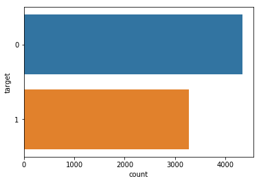

Twitter Real or Not prediction
Importing the necessary libraries
import numpy as np
import pandas as pd
import os
import seaborn as sns
import string
import csv
from sklearn.feature_extraction.text import CountVectorizer
from sklearn import linear_model
from sklearn.naive_bayes import MultinomialNB
from sklearn.metrics import confusion_matrix
from sklearn.metrics import accuracy_score
Loading the training and test data using pandas library
from sklearn.model_selection import train_test_split
train = pd.read_csv('../input/nlp-getting-started/train.csv')
test = pd.read_csv('../input/nlp-getting-started/test.csv')
submit = pd.read_csv("/kaggle/input/nlp-getting-started/sample_submission.csv")
Reading the first five values of the training dataset
train.head()
| id | keyword | location | text | target | |
|---|---|---|---|---|---|
| 0 | 1 | NaN | NaN | Our Deeds are the Reason of this #earthquake M... | 1 |
| 1 | 4 | NaN | NaN | Forest fire near La Ronge Sask. Canada | 1 |
| 2 | 5 | NaN | NaN | All residents asked to 'shelter in place' are ... | 1 |
| 3 | 6 | NaN | NaN | 13,000 people receive #wildfires evacuation or... | 1 |
| 4 | 7 | NaN | NaN | Just got sent this photo from Ruby #Alaska as ... | 1 |
print (train.shape, test.shape, submit.shape)
(7613, 5) (3263, 4) (3263, 2)
Looking at the count of the null values
print(train.isnull().sum())
print(test.isnull().sum())
id 0
keyword 61
location 2533
text 0
target 0
dtype: int64
id 0
keyword 26
location 1105
text 0
dtype: int64
import matplotlib.pyplot as plt
sns.countplot(y=train.target)
<matplotlib.axes._subplots.AxesSubplot at 0x7fbc0ccb6cc0>

Looking at some examples of training before cleaning the text
train['text']
0 Our Deeds are the Reason of this #earthquake M...
1 Forest fire near La Ronge Sask. Canada
2 All residents asked to 'shelter in place' are ...
3 13,000 people receive #wildfires evacuation or...
4 Just got sent this photo from Ruby #Alaska as ...
...
7608 Two giant cranes holding a bridge collapse int...
7609 @aria_ahrary @TheTawniest The out of control w...
7610 M1.94 [01:04 UTC]?5km S of Volcano Hawaii. htt...
7611 Police investigating after an e-bike collided ...
7612 The Latest: More Homes Razed by Northern Calif...
Name: text, Length: 7613, dtype: object
Defining a function to clean the dataset
import re
def clean(text):
text=re.sub(r'https?://\S+', '', text)
text=re.sub(r'<.*?>','',text)
text=re.sub(r'\n',' ', text)
text=re.sub('\s+', ' ', text).strip()
return text
train['text'] = train['text'].apply(lambda x : clean(x))
Looking at the examples after cleaning the dataset
train['text']
0 Our Deeds are the Reason of this #earthquake M...
1 Forest fire near La Ronge Sask. Canada
2 All residents asked to 'shelter in place' are ...
3 13,000 people receive #wildfires evacuation or...
4 Just got sent this photo from Ruby #Alaska as ...
...
7608 Two giant cranes holding a bridge collapse int...
7609 @aria_ahrary @TheTawniest The out of control w...
7610 M1.94 [01:04 UTC]?5km S of Volcano Hawaii.
7611 Police investigating after an e-bike collided ...
7612 The Latest: More Homes Razed by Northern Calif...
Name: text, Length: 7613, dtype: object
def remove_emoji(text):
emoji_pattern = re.compile("["
u"\U0001F600-\U0001F64F" # emoticons
u"\U0001F300-\U0001F5FF" # symbols & pictographs
u"\U0001F680-\U0001F6FF" # transport & map symbols
u"\U0001F1E0-\U0001F1FF" # flags (iOS)
u"\U00002702-\U000027B0"
u"\U000024C2-\U0001F251"
"]+", flags=re.UNICODE)
return emoji_pattern.sub(r'', text)
train['text'] = train['text'].apply(lambda x: remove_emoji(x))
# Reference : https://gist.github.com/slowkow/7a7f61f495e3dbb7e3d767f97bd7304b
train['text']
0 Our Deeds are the Reason of this #earthquake M...
1 Forest fire near La Ronge Sask. Canada
2 All residents asked to 'shelter in place' are ...
3 13,000 people receive #wildfires evacuation or...
4 Just got sent this photo from Ruby #Alaska as ...
...
7608 Two giant cranes holding a bridge collapse int...
7609 @aria_ahrary @TheTawniest The out of control w...
7610 M1.94 [01:04 UTC]?5km S of Volcano Hawaii.
7611 Police investigating after an e-bike collided ...
7612 The Latest: More Homes Razed by Northern Calif...
Name: text, Length: 7613, dtype: object
def remove_punct(text):
table=str.maketrans('','',string.punctuation)
return text.translate(table)
#train_data['text'] = train_data['text'].apply(lambda x : remove_punct(x)
Assigning x to our text and y to our target column
Splitting the training and testing dataset/
x = train["text"]
y = train["target"]
X_train, X_test, y_train, y_test = train_test_split(x, y, test_size=0.2, random_state=42)
We need to vectorize the training dataset examples
vectorize = CountVectorizer(stop_words = 'english')
x_vector_train = vectorize.fit_transform(X_train)
x_vector_test = vectorize.transform(X_test)
Our first model is the multinomial Naive Bayes model. Using the fit and predict methods and calculating the accuracy
model = MultinomialNB()
model.fit(x_vector_train, y_train)
prediction = model.predict(x_test_cv)
acc=accuracy_score(y_test,prediction)
print(acc)
0.7892317793827971
We will test one more model called as Ridge Classifier and printing the accuracy
clf = linear_model.RidgeClassifier()
clf.fit(x_vector_train, y_train)
prediction1=clf.predict(x_test_cv)
acc1=accuracy_score(y_test,prediction1)
print(acc1)
0.768220617202889
As we can see Multinomial Naive Bayes model performs a little better than Naive Bayes model by almost 2 percentage. Thus we will use that model to make our submission file
#predicting on the test values
x_test=test["text"]
#vectorizing the data
x_test_vector=vectorize.transform(x_test)
#making predictions
prediction=model.predict(x_test_vector)
#making submission
submit["target"]=prediction
print(submit.head(10))
id target
0 0 1
1 2 1
2 3 1
3 9 1
4 11 1
5 12 1
6 21 0
7 22 0
8 27 0
9 29 0
submit.to_csv("submission.csv",index=False)
Sushant Mhambrey
Student, Masters of Science in Computer Science
My research interests include distributed robotics, mobile computing and programmable matter.